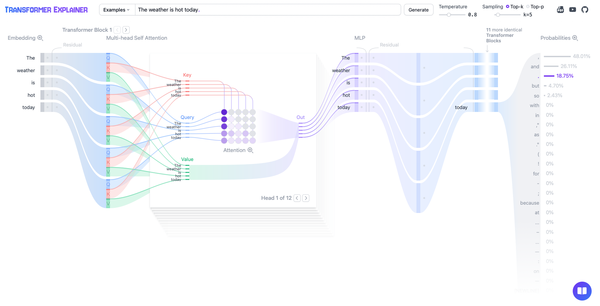

이 문서를 읽는 법 — 5가지 주제가 어떻게 연결되어 있는가
이 문서는 다섯 가지 주제를 다루지만, 사실 이 다섯 가지는 "LLM이 텍스트 한 줄을 만들어내는 하나의 과정"을 서로 다른 각도에서 들여다본 것에 불과합니다.
- 먼저 Transformer는 문장 속 단어들이 서로 얼마나 관련 있는지를 Attention으로 계산하는 구조입니다. 이 Attention 계산의 마지막 단계에는 반드시 Softmax가 들어갑니다.
- 이 구조로 실제 문장을 만들어낼 때(추론, inference), LLM은 프롬프트 전체를 한 번에 처리하는 Prefill 단계와, 단어를 하나씩 만들어가는 Decode 단계를 거칩니다. 이때 반복 계산을 피하려고 KV Cache를 사용합니다.
- 그런데 이 Attention·Softmax 계산을 GPU에서 실제로 어떻게 빠르게 처리하느냐가 성능을 좌우하는데, 여기서 FlashAttention이 등장합니다. GPU 메모리 구조(HBM/SRAM)를 활용해 Softmax를 "온라인"으로 계산하며 속도를 크게 끌어올린 기법입니다.
즉 순서대로 읽으면: ① Attention/Transformer(구조) → ② KV Cache/Prefill·Decode(그 구조로 텍스트를 생성하는 방식) → ③ Softmax/FlashAttention(그 계산을 빠르게 하는 방법) 흐름으로 자연스럽게 이어집니다.
flowchart TB
subgraph STEP1["① 구조: Transformer / Attention"]
A1["입력 문장"] --> A2["Q, K, V 계산"]
A2 --> A3["Attention = softmax(QKᵀ/√d_k) · V"]
A3 --> A4["Multi-head + Positional Encoding<br/>→ 인코더/디코더 층"]
end
subgraph STEP2["② 추론: Prefill → Decode (KV Cache)"]
B1["Prefill<br/>프롬프트 전체 병렬 처리<br/>(compute-bound)"] --> B2["KV Cache 생성"]
B2 --> B3["Decode<br/>토큰 1개씩 생성<br/>(memory-bound)"]
B3 -->|"매 스텝 K,V 추가"| B2
end
subgraph STEP3["③ 가속: Softmax 트릭 / FlashAttention"]
C1["Safe Softmax<br/>(오버플로우 방지)"] --> C2["Online Softmax<br/>(타일 단위 누적 계산)"]
C2 --> C3["FlashAttention<br/>HBM↔SRAM 이동 최소화"]
end
STEP1 --> STEP2
STEP2 -.->|"Attention 계산을 실제로<br/>수행할 때마다"| STEP3
핵심 요약 (한눈에 보기)
| 주제 | 한 줄 요약 |
|---|---|
| Attention/Transformer | 모든 단어가 서로를 동시에 참고(Query-Key-Value)해서 문맥을 파악하는 구조. RNN처럼 순서대로 읽지 않아 병렬화가 가능하다. |
| KV Cache | 이미 계산한 Key/Value를 저장해뒀다 재사용해서, 매 토큰 생성마다 과거 전체를 다시 계산하는 낭비를 없앤다. |
| Prefill / Decode | 프롬프트 전체를 한 번에 처리하는 연산 위주(compute-bound) 단계와, 토큰을 하나씩 만드는 메모리 위주(memory-bound) 단계로 나뉜다. |
| Softmax 트릭 | exp() 오버플로우를 막기 위해 최댓값을 빼고 계산해도 결과는 동일하다. 이를 점진적으로(online) 계산하면 데이터를 다 모으지 않고도 정확한 결과를 낼 수 있다. |
| FlashAttention | 거대한 N×N attention 행렬을 통째로 만들지 않고, 작은 타일 단위로 빠른 메모리(SRAM)에서 계산해 정확도 손실 없이 속도를 크게 높인다. |
이 다섯 가지를 다 읽은 뒤에는, ④ 실전으로 확인하기 절에서 실제 GPT-2 모델이
"The weather is hot today"라는 문장으로 다음 단어를 만들어내는 전 과정을 숫자와 함께 직접 따라가 볼 수 있다.
0. 시작하기 전에 — 꼭 알아야 할 기본 용어 12가지
이 문서는 LLM을 처음 접하는 사람도 읽을 수 있게 썼지만, 아래 12개 용어는 본문 곳곳에서 "이미 아는 것"처럼 계속 등장한다. 처음 보는 용어가 나올 때마다 여기로 돌아와 확인하면 된다.
| 용어 | 쉬운 설명 |
|---|---|
| 토큰(token) | 모델이 글을 읽는 최소 단위. 단어 하나일 수도, 단어의 일부(예: "empowers" → "em"+"powers")일 수도 있다. 사람이 글자를 보듯, 모델은 토큰을 본다. |
| 벡터(vector) | 숫자를 여러 개 순서대로 늘어놓은 목록. 예: [0.2, -1.5, 3.0]은 "3차원 벡터"다. LLM은 모든 단어·문장·의미를 결국 이런 숫자 목록으로 표현한다. |
| 임베딩(embedding) | 토큰(글자)을 벡터(숫자 목록)로 바꾸는 것, 또는 그렇게 바뀐 결과물. "사과"라는 글자 자체는 계산할 수 없지만, [0.1, 0.9, ...]라는 벡터로 바꾸면 컴퓨터가 계산(더하기, 비교 등)할 수 있게 된다. |
| 차원(dimension) | 벡터 안에 숫자가 몇 개 들어있는지. "768차원 벡터"는 숫자 768개짜리 목록이라는 뜻. 차원이 클수록 더 많은 정보를 담을 수 있지만 계산량도 늘어난다. |
| 행렬(matrix) / 행렬곱 | 벡터를 여러 줄 쌓아 표 형태로 만든 것이 행렬이다. "행렬곱"은 두 표를 정해진 규칙으로 곱해 새로운 표를 만드는 연산으로, 딥러닝 계산의 90% 이상이 사실상 이 행렬곱이다. GPU는 이 연산을 아주 잘하도록 특화된 하드웨어다. |
| 내적(dot product) | 두 벡터의 같은 위치 숫자끼리 곱한 뒤 전부 더하는 연산. 두 벡터가 "얼마나 비슷한 방향을 보는지"(=얼마나 관련 있는지)를 숫자 하나로 요약해준다. Attention에서 Query와 Key를 비교할 때 바로 이 연산을 쓴다. |
| 파라미터(parameter, 가중치/weight) | 모델 내부에 저장된, 학습을 통해 값이 정해지는 숫자들. "GPT-2는 파라미터 1.24억 개"라는 말은 모델 안에 그만큼 많은 숫자 다이얼이 있고, 학습 과정에서 그 다이얼 값들이 조정되었다는 뜻이다. |
| 확률분포(probability distribution) | "각 선택지가 정답일 가능성"을 전부 더하면 100%(=1)가 되도록 표현한 것. LLM이 다음 단어를 고를 때는 어휘 사전에 있는 모든 후보 단어 각각에 확률을 매긴 확률분포를 먼저 만든 뒤, 거기서 하나를 뽑는다. |
| 그레이디언트(gradient, 기울기) / 역전파 | 모델이 "정답과 얼마나 틀렸는지"를 보고 각 파라미터를 "어느 방향으로 얼마나 고쳐야 하는지" 알려주는 신호. 이 신호를 출력층에서 입력층 방향으로 거꾸로 전달하며 파라미터를 고치는 과정을 역전파(backpropagation)라고 한다. 그레이디언트가 너무 작아지면(≈0) 학습이 멈춰버리는데, 이를 "기울기 소실"이라 부른다. |
| 시퀀스(sequence) / 배치(batch) | 시퀀스는 토큰들이 순서대로 나열된 것(문장 하나). 배치는 여러 개의 시퀀스(=여러 사용자의 요청)를 한 번에 묶어서 GPU에 동시에 넣어 처리하는 단위다. 배치를 키우면 한 번에 더 많은 요청을 처리해 효율이 오르지만, 그만큼 메모리도 더 필요해진다. |
| 레이어(layer) / 신경망(neural network) | 입력을 받아 계산한 뒤 다음 단계로 넘기는 계산 단위 하나가 레이어다. 이런 레이어를 여러 겹 쌓은 전체 구조를 신경망이라 부른다("딥러닝"의 "딥"은 이 레이어를 깊게(deep) 쌓았다는 뜻이다). |
| GPU / FLOPs | GPU는 원래 그래픽(화면의 수많은 픽셀)을 동시에 계산하려고 만들어진, "똑같은 계산을 아주 많이 동시에" 하는 데 특화된 하드웨어 — 마침 딥러닝의 행렬곱 계산과 궁합이 잘 맞아 AI 연산에도 널리 쓰인다. FLOPs(Floating point Operations Per Second)는 GPU가 1초에 처리할 수 있는 계산(덧셈·곱셈) 횟수로, GPU의 "연산 능력"을 나타내는 단위다. |
이 표에 없는 용어(Q/K/V, softmax, HBM/SRAM 등)는 해당 개념이 처음 등장하는 절에서 그때그때 비유와 함께 설명한다.
① Attention 메커니즘과 Transformer 아키텍처
1. Self-attention은 왜 필요한가 — RNN의 한계
Transformer 이전에는 문장을 처리할 때 RNN(순환 신경망) 계열(LSTM, GRU)이 주로 쓰였다. RNN은 단어를 왼쪽에서 오른쪽으로 한 개씩 순서대로 읽으면서, 그때까지 읽은 내용을 하나의 "요약 벡터(hidden state)"에 눌러 담는 방식이다.
이 방식에는 두 가지 근본적인 문제가 있다.
1) 순차 처리 때문에 느리다 (병렬화 불가)
10번째 단어를 처리하려면 반드시 1~9번째 단어를 순서대로 다 처리해야 한다. 문장이 길어질수록, GPU가 아무리 많아도 이 순서를 건너뛸 수 없어 학습·추론 속도가 느려진다.
2) 멀리 떨어진 단어 관계를 기억하기 어렵다 (장거리 의존성)
예를 들어 "그 남자는 ... (긴 문장) ... 그는 행복했다"에서 "그는"이 앞의 "그 남자"를 가리킨다는 것을 파악하려면, RNN은 그 사이의 모든 정보를 하나의 벡터에 계속 눌러 담아 전달해야 한다. 문장이 길어지면 앞쪽 정보가 점점 희석되거나(기울기 소실) 아예 잊혀버린다.
Self-attention은 이 문제를 근본적으로 다르게 푼다: 문장 속 모든 단어 쌍의 관련도를 한 번에(병렬로) 계산하기 때문에, 단어 사이의 거리가 1이든 100이든 계산 비용이 동일하다. "그는"이라는 단어는 문장 전체를 한 번에 훑어보면서 "그 남자"라는 단어와 직접 연결될 수 있다.
2. Query, Key, Value — 도서관 검색으로 이해하기
Self-attention의 핵심 재료는 세 개의 벡터, Query(Q), Key(K), Value(V)다. 이들은 각 단어의 임베딩 벡터에 서로 다른 가중치 행렬(W^Q, W^K, W^V)을 곱해서 만들어낸다. 즉 같은 단어라도 "질문 역할을 할 때의 모습", "색인표 역할을 할 때의 모습", "실제 내용물로서의 모습"이 각각 다르게 표현된다.
도서관에 비유하면 이해하기 쉽다.
- Query(질문): 내가 지금 알고 싶은 것. "이 단어와 관련된 정보를 찾고 싶다"는 질문지.
- Key(색인표): 서가에 꽂힌 각 책(=다른 모든 단어)에 붙어 있는 색인 카드. "나는 이런 내용을 담고 있어요"라는 태그.
- Value(실제 내용): 그 책을 펼쳤을 때 들어있는 진짜 내용물.
내 질문지(Query)를 들고 서가를 돌아다니며 각 책의 색인표(Key)와 얼마나 잘 맞는지(내적, dot product) 비교한다. 잘 맞는 책일수록 더 큰 점수를 받고, 그 점수를 확률(softmax)로 바꾼 뒤, 점수 비율대로 각 책의 내용(Value)을 섞어서 가져온다. 이렇게 만들어진 결과가 바로 그 단어의 새로운(문맥이 반영된) 표현이다.
Scaled Dot-Product Attention 수식
$$\text{Attention}(Q, K, V) = \text{softmax}\left(\frac{QK^T}{\sqrt{d_k}}\right)V$$
말로 풀면 다음 4단계다.
- QK^T: 내 질문(Q)과 모든 단어의 색인(K)을 내적해서 "관련도 점수"를 구한다.
- ÷√d_k: 점수의 크기를 적절히 줄인다 (이유는 다음 절에서).
- softmax: 점수들을 "합이 1이 되는 확률(가중치)"로 바꾼다.
- ×V: 그 확률을 가중치로 각 단어의 내용(V)을 섞어 최종 출력을 만든다.
손으로 계산해보기 (장난감 예시)
"나는 밥을 먹었다"라는 3단어 문장에서, 계산이 끝난 후의 Q, K, V 벡터가 (설명을 위해) 아래처럼 아주 작은 2차원(d_k=2)이라고 가정하자. 지금 우리는 "밥을" 이라는 단어의 새로운 표현을 계산하려는 중이다.
| 단어 | Key (K) | Value (V) |
|---|---|---|
| 나는 | [1, 0] | [1, 0] |
| 밥을 | [0, 1] | [0, 2] |
| 먹었다 | [1, 1] | [1, 1] |
"밥을"의 Query: Q = [1, 0]
1단계 — QK^T (내적으로 관련도 점수 구하기)
- Q·K(나는) = 1×1 + 0×0 = 1
- Q·K(밥을) = 1×0 + 0×1 = 0
- Q·K(먹었다) = 1×1 + 0×1 = 1
→ 점수: [1, 0, 1]
2단계 — √d_k로 나누기
d_k = 2 이므로 √d_k ≈ 1.414
→ [1/1.414, 0/1.414, 1/1.414] = [0.707, 0, 0.707]
3단계 — softmax (확률로 변환)
exp(0.707)≈2.03, exp(0)=1, exp(0.707)≈2.03 → 합 = 5.06
→ softmax 결과: [0.40, 0.20, 0.40]
(즉 "밥을"은 "나는"에 40%, 자기 자신에 20%, "먹었다"에 40%만큼 주의를 기울인다는 뜻)
4단계 — 가중합 (×V)
$$0.40 \times [1,0] + 0.20 \times [0,2] + 0.40 \times [1,1]$$
$$= [0.40, 0] + [0, 0.40] + [0.40, 0.40] = [0.80, 0.80]$$
→ "밥을"의 새로운 표현은 [0.80, 0.80]이 된다. 이 값은 더 이상 "밥을" 하나만의 정보가 아니라, "나는"과 "먹었다"의 정보가 각각 40%씩 섞여 들어간, 문맥이 반영된 벡터다.
flowchart LR
Q["Query<br/>(밥을)"] --> MM1["MatMul<br/>Q · Kᵀ"]
K["Key<br/>(나는·밥을·먹었다)"] --> MM1
MM1 --> SC["Scale<br/>÷ √d_k"]
SC --> SM["Softmax<br/>(합=1인 확률)"]
SM -->|"0.40, 0.20, 0.40"| MM2["MatMul<br/>가중합 × V"]
V["Value<br/>(나는·밥을·먹었다)"] --> MM2
MM2 --> OUT["출력 벡터<br/>[0.80, 0.80]<br/>(문맥이 반영된 '밥을')"]
3. 왜 하필 √d_k로 나누는가
2단계에서 점수를 √d_k로 나누는 이유는 softmax가 한쪽으로 쏠려서 학습이 멈추는 것을 막기 위해서다.
Q와 K의 각 원소가 평균 0, 분산 1인 (표준적인) 랜덤값이라고 가정하면, d_k개의 원소를 곱해서 더하는 내적(dot product)의 분산은 대략 d_k가 된다. 즉 차원 수(d_k)가 커질수록 내적 값 자체가 점점 커진다.
문제는 softmax가 입력값이 너무 크게 벌어지면 극단적으로 반응한다는 점이다. 예를 들어 softmax([1, 2])는 [0.27, 0.73]로 비교적 완만하지만, softmax([10, 20])은 [0.00005, 0.99995]처럼 한쪽에 확률이 거의 몰려버린다. 이렇게 되면:
- 가장 큰 점수를 가진 단어 하나만 거의 100% 선택되고 나머지는 완전히 무시된다 (다양한 정보를 섞어 쓰지 못함).
- softmax 곡선이 거의 평평해진(포화, saturation) 영역에 들어가면서, 역전파 시 기울기(gradient)가 0에 가까워져 학습이 거의 진행되지 않는다 (기울기 소실).
d_k가 클수록(예: 논문에서는 head당 64차원) 이 문제가 더 심해지므로, 점수를 √d_k로 나눠 분산을 다시 1 근처로 되돌려준다. 일종의 "값이 너무 커지지 않도록 미리 눈금을 조정하는" 정규화 장치라고 이해하면 된다.
4. Multi-head Attention — 여러 명의 전문가가 동시에 읽기
지금까지 본 attention은 "한 가지 기준"으로만 단어 간 관련도를 계산한다. 하지만 문장을 이해할 때 우리는 동시에 여러 관점을 사용한다. 예를 들어:
- 문법적 관점: 이 동사의 주어는 무엇인가?
- 의미적 관점: 이 단어와 뜻이 비슷한 단어는?
- 지시 관계 관점: "그것"이 가리키는 대상은?
Transformer는 이걸 "한 번의 큰 attention"이 아니라, 작은 attention을 여러 개(논문에서는 8개, h=8) 병렬로 돌려서 해결한다. 각 head는 전체 512차원(d_model)을 8등분한 64차원(d_k = d_v = 512/8 = 64)짜리 자기만의 Q/K/V 변환을 학습하고, 서로 다른 head는 서로 다른 관점(문법적 관계에 집중하는 head, 의미적 유사성에 집중하는 head 등)을 자연스럽게 학습하게 된다.
$$\text{MultiHead}(Q,K,V) = \text{Concat}(\text{head}_1, \dots, \text{head}_8) W^O$$
8개 head가 각자 계산한 결과(각 64차원)를 옆으로 이어붙이면(concat) 다시 512차원이 되고, 여기에 최종 가중치 행렬 W^O를 곱해 하나의 출력으로 합쳐준다. 흥미로운 점은, head 하나의 차원을 64로 줄여놓았기 때문에 8개를 병렬로 계산해도 전체 연산량은 512차원짜리 attention 1개를 계산하는 것과 비슷한 수준이라는 것이다 — 즉 "여러 관점"이라는 이득을 거의 추가 비용 없이 얻는 구조다.
5. Positional Encoding — 순서를 잃어버린 attention에 순서를 되돌려주기
RNN은 단어를 하나씩 순서대로 읽기 때문에 "몇 번째 단어인지"가 구조 자체에 자연스럽게 녹아 있다. 그런데 self-attention은 모든 단어를 동시에, 병렬로 처리한다 — 수식만 놓고 보면 "나는 밥을 먹었다"와 "먹었다 밥을 나는"을 완전히 똑같은 집합(set)으로 취급해버린다. 즉 attention 자체에는 순서 개념이 전혀 없다.
그래서 Transformer는 각 단어의 임베딩에 "이 단어는 몇 번째 위치에 있다"는 정보를 담은 벡터를 더해서(add) 넣어준다. 이것이 positional encoding이다.
$$PE_{(pos, 2i)} = \sin\left(\frac{pos}{10000^{2i/d_{model}}}\right), \qquad PE_{(pos, 2i+1)} = \cos\left(\frac{pos}{10000^{2i/d_{model}}}\right)$$
여기서 pos는 문장 내 위치(0, 1, 2, ...), i는 벡터 내 차원 인덱스다.
직관적으로 이해하면, 자동차 계기판이나 시계 바늘 여러 개를 서로 다른 속도로 돌리는 것과 비슷하다. 초침, 분침, 시침처럼 회전 속도(주파수)가 서로 다른 sin/cos 파동을 여러 개(d_model=512개) 겹쳐서 각 위치마다 고유한 "지문" 패턴을 만들어내는 것이다. 위치가 하나씩 바뀔 때마다 이 지문 패턴 전체가 규칙적으로 조금씩 달라지기 때문에, 모델은 "이 두 단어가 몇 칸 떨어져 있는지"를 이 패턴의 차이로부터 학습할 수 있다.
sin/cos 함수를 선택한 이유는, 삼각함수의 성질상 위치 pos+k의 인코딩을 위치 pos의 인코딩의 선형 함수로 표현할 수 있어, 모델이 "상대적인 거리" 관계를 학습하기 쉽고, 학습 때 보지 못한 더 긴 문장 길이에도 어느 정도 일반화(extrapolation)될 수 있기 때문이다.
6. Transformer 인코더·디코더 전체 구조
Transformer는 이렇게 만든 attention과 positional encoding을 재료로, 인코더 6층 + 디코더 6층을 쌓아 올린 구조다 (논문 기준 N=6).
인코더 레이어 1개 = 아래 2개의 sub-layer로 구성:
- Multi-head self-attention (입력 문장 내부에서 서로를 참고)
- Position-wise Feed-Forward Network (위치별로 동일하게 적용되는 완전연결층 2개)
디코더 레이어 1개 = 아래 3개의 sub-layer로 구성:
- Masked multi-head self-attention (아직 생성하지 않은 미래 단어는 미리 못 보게 가림 — 번역 등에서 다음 단어를 예측할 때 정답을 미리 커닝하지 못하게 하는 장치)
- 인코더-디코더 attention (Query는 디코더에서, Key/Value는 인코더의 최종 출력에서 가져옴 — "지금까지 생성한 문장이 원문의 어느 부분을 참고해야 하는가")
- Position-wise Feed-Forward Network
각 sub-layer마다 residual connection(입력을 출력에 더해줌) 뒤에 layer normalization을 적용한다: LayerNorm(x + Sublayer(x)). 이는 깊게 층을 쌓아도 학습 신호(기울기)가 잘 전달되도록 돕는 장치로, ResNet 등에서 쓰이는 것과 같은 아이디어다.
flowchart TB
subgraph ENC["인코더 (× 6층)"]
direction TB
E_IN["입력 임베딩 + Positional Encoding"] --> E_SA["Multi-Head<br/>Self-Attention"]
E_SA --> E_ADD1["Add & LayerNorm"]
E_ADD1 --> E_FF["Feed-Forward"]
E_FF --> E_ADD2["Add & LayerNorm"]
end
subgraph DEC["디코더 (× 6층)"]
direction TB
D_IN["출력 임베딩 + Positional Encoding<br/>(한 칸씩 shift)"] --> D_MSA["Masked Multi-Head<br/>Self-Attention"]
D_MSA --> D_ADD1["Add & LayerNorm"]
D_ADD1 --> D_CA["인코더-디코더<br/>Attention"]
D_CA --> D_ADD2["Add & LayerNorm"]
D_ADD2 --> D_FF["Feed-Forward"]
D_FF --> D_ADD3["Add & LayerNorm"]
end
E_ADD2 -- "K, V" --> D_CA
D_ADD3 --> LIN["Linear + Softmax"]
LIN --> OUT["다음 단어 확률 분포"]
정리하면, Transformer는 (1) RNN의 순차 처리 문제를 self-attention으로 없애 병렬화하고, (2) Query/Key/Value 구조로 단어 간 관련도를 직접 계산하며, (3) 그 계산이 너무 극단으로 쏠리지 않게 √d_k로 조정하고, (4) 8개의 head로 여러 관점을 동시에 보고, (5) 잃어버린 순서 정보는 positional encoding으로 되돌려준 뒤, (6) 이 모든 요소를 residual connection과 layer normalization으로 안정화하며 인코더·디코더 6층씩 쌓아 올린 아키텍처다.
7. Masked Self-Attention — "미래 단어를 못 보게" 가리는 구체적인 방법
디코더의 self-attention은 아직 생성하지 않은 미래 토큰을 미리 커닝하지 못하도록 마스킹(masking)을 적용한다고 했다. 그런데 이걸 실제로 어떻게 구현할까? 답은 의외로 간단하다 — 미래 위치의 attention 점수에 아주 큰 음수(예: -∞에 가까운 값)를 더해준 뒤 softmax를 적용하는 것이다.
토큰 1 → 토큰 1만 참고 가능
토큰 2 → 토큰 1~2만 참고 가능
토큰 3 → 토큰 1~3만 참고 가능softmax는 내부적으로 exp(x)를 계산하는데, exp(매우 큰 음수) ≈ 0이 된다. 즉 미래 토큰의 attention 점수를 -10000 같은 극단적인 음수로 깔아버리면, softmax를 통과한 뒤 그 자리의 가중치는 사실상 0%가 되어 "참고할 수 없는 토큰"이 자연스럽게 완성된다. 뒤에서 ③장에서 자세히 다룰 "exp()가 극단적인 입력에 어떻게 반응하는가"라는 성질이, 여기서는 오버플로우 방지가 아니라 원하는 토큰을 의도적으로 완전히 무시시키는 도구로 거꾸로 활용되는 셈이다.
이 방식을 causal mask(인과적 마스크) 라고 부르며, GPT 계열처럼 "다음 단어 예측"을 학습하는 autoregressive 모델에서는 반드시 필요한 장치다 — 정답(미래 단어)을 미리 보면서 그 다음 단어를 "예측"하는 건 커닝이나 다름없기 때문이다.
8. 실전 감 잡기 — 실제 모델들은 이 구조를 얼마나 크게 쌓아 올렸을까
지금까지 배운 개념이 실제 모델에서는 어떤 숫자로 나타나는지 감을 잡아보자.
| 항목 | 원 논문 Transformer(base) | GPT-2 Small | Qwen2.5-0.5B |
|---|---|---|---|
| 레이어(층) 수 | 6 (인코더) + 6 (디코더) | 12 | 24 |
| 임베딩 차원 (d_model) | 512 | 768 | 896 |
| Attention head 수 | 8 | 12 | 14 (Query 기준) |
| Head당 차원 | 64 | 64 | 64 |
| FFN 중간 차원 | 2,048 | 3,072 (= 768×4) | 4,864 |
| 어휘 사전 크기 | ~37,000 | 50,257 | 151,936 |
| 최대 문맥 길이 | - | 1,024 | 32,768 |
| 총 파라미터 | 약 65M | 약 124M | 약 494M (≈0.5B) |
몇 가지 흥미로운 공통 패턴이 보인다.
- Head 하나당 차원은 대부분 64로 맞춰져 있다. 모델이 커져도 "한 관점(head)이 담당하는 정보의 폭"은 비슷하게 유지하고, 대신 head 개수와 레이어 수를 늘려 전체 용량을 키우는 경향이 있다.
- FFN 중간 차원은 임베딩 차원의 약 4배다 (768→3,072, GPT-3 기준으로도 동일한 비율). 이 넓은 "작업 공간"에서 각 토큰의 정보를 여러 각도로 펼쳐봤다가 다시 원래 차원으로 압축하는 구조다. 실제로 GPT-3 전체 파라미터의 약 2/3가 FFN(MLP)에 몰려 있을 만큼, attention 못지않게 FFN도 모델 용량의 핵심을 차지한다.
- Qwen2.5-0.5B의 "Attention head 수 14 vs 실제 K/V head 수 2"처럼, 최신 모델은 Query head 수와 Key/Value head 수를 다르게 가져가는 경우가 많다 — 이건 다음 장(② KV Cache)에서 다룰 GQA(Grouped Query Attention) 라는 최적화 기법 때문이며, 서빙 비용과 직결된다.
참고로 GPT-2 계열은 파라미터 수를 아끼기 위해 입력 토큰 임베딩 행렬과 출력층(다음 토큰 확률을 만드는 layer)의 가중치를 공유하는 트릭도 쓴다 (weight tying) — "단어 → 벡터"로 바꾸는 지도와 "벡터 → 단어 확률"로 바꾸는 지도를 같은 행렬로 재사용하는 것이다.
② KV Cache와 Prefill/Decode — LLM 서빙의 핵심 병목 이해하기
지금까지 본 Transformer 구조는 "모델이 어떻게 문맥을 이해하는가"를 다뤘다. 이제 그 모델로 실제로 문장을 한 토큰씩 만들어낼 때 무슨 일이 벌어지는지 살펴보자.
1. 왜 텍스트는 한 토큰씩 순차적으로 생성될까? (Autoregressive 생성)
GPT류 LLM은 autoregressive(자기회귀적) 언어모델이다. 쉽게 말해 "다음 단어를 맞추는 게임"을 반복하는 구조다.
P(문장) = P(w1) × P(w2 | w1) × P(w3 | w1, w2) × P(w4 | w1, w2, w3) × ...즉 $n$번째 토큰을 생성하려면 반드시 $1$번째부터 $n-1$번째까지의 토큰이 먼저 확정되어 있어야 한다. 이건 마치 이야기를 한 문장씩 지어나가는 릴레이 소설과 같다 — 다음 문장을 쓰려면 앞 문장을 다 읽어야 하고, 아직 쓰지 않은 뒷부분을 미리 알 수는 없다.
그래서 생성 과정은 다음과 같이 진행된다.
- "오늘 날씨가" → 모델이 다음 토큰 예측 → "좋" 생성
- "오늘 날씨가 좋" → 다음 토큰 예측 → "다" 생성
- "오늘 날씨가 좋다" → 다음 토큰 예측 → "." 생성
- ... (반복)
각 스텝은 이전 스텝의 출력에 의존하기 때문에 병렬화가 불가능하고, 토큰 하나하나를 순서대로 생성해야 한다. 이 구조 자체가 뒤에서 설명할 "Decode 단계가 느릴 수밖에 없는 이유"의 근본 원인이다.
2. KV Cache 없이 생성한다면? — 얼마나 비효율적인가
앞서 본 것처럼 self-attention은 매 레이어에서 모든 토큰에 대해 Q, K, V를 계산하고 softmax(QKᵀ/√d_k)·V를 수행한다. 문제는 KV cache가 없다면, 새 토큰을 하나 생성할 때마다 지금까지의 전체 문장에 대해 K와 V를 처음부터 다시 계산해야 한다는 점이다.
구체적인 예시로 보는 중복 연산
100개의 토큰을 생성하는 상황을 가정해보자.
| 생성 단계 | 캐시 없이: 매번 다시 계산해야 하는 토큰 수 |
|---|---|
| 1번째 토큰 생성 시 | 프롬프트 토큰 수 (예: 50개) |
| 2번째 토큰 생성 시 | 51개 (50 + 방금 생성한 1개) |
| 3번째 토큰 생성 시 | 52개 |
| ... | ... |
| 100번째 토큰 생성 시 | 149개 |
즉 1번째 토큰의 K, V는 총 100번 다시 계산된다 (2번째 생성 시에도, 3번째 생성 시에도... 149번째 계산할 때도 여전히 필요하니까). 2번째 토큰의 K, V는 99번, 3번째는 98번... 이런 식으로 중복이 쌓인다.
전체적으로 보면 캐시가 없을 때 필요한 연산량은 대략:
$$ 50 + 51 + 52 + \dots + 149 \approx 50 \times 100 + \frac{100 \times 99}{2} \approx 9,950 \text{ 토큰만큼의 K,V 계산} $$
반면 캐시가 있다면 각 토큰의 K, V는 딱 한 번만 계산하면 되므로 $50 + 100 = 150$ 토큰만큼의 계산으로 끝난다.
약 66배의 중복 연산이 발생하는 것이다. 문장이 길어질수록(생성 토큰 수가 늘어날수록) 이 중복은 선형이 아니라 대략 $O(n^2)$로 커지기 때문에, 캐시 없는 생성은 긴 텍스트일수록 기하급수적으로 느려진다.
비유하자면: 매번 새 문장을 쓸 때마다 지금까지 쓴 소설 전체를 처음부터 다시 필사하고 나서야 다음 문장을 이어 쓰는 것과 같다. 10페이지짜리 소설의 11페이지째를 쓰려고 10페이지를 통째로 다시 베껴 쓰는 셈이다 — 당연히 비효율적이다.
3. KV Cache는 정확히 무엇을 저장하는가? 왜 Q는 캐싱하지 않을까?
무엇을 저장하는가
KV cache는 각 Transformer 레이어, 각 attention head마다 이미 계산된 Key 벡터와 Value 벡터를 GPU 메모리(주로 HBM)에 저장해두는 것이다.
- 새 토큰이 들어오면, 그 토큰에 대한 K, V만 새로 계산해서 캐시에 추가(append)한다.
- 과거 토큰들의 K, V는 다시 계산하지 않고 캐시에서 그대로 재사용한다.
Step 1: 캐시 = [K1, V1] (토큰1 K,V만 계산)
Step 2: 캐시 = [K1, V1, K2, V2] (토큰2 K,V만 추가 계산)
Step 3: 캐시 = [K1, V1, K2, V2, K3, V3] (토큰3 K,V만 추가 계산)왜 Q는 캐싱하지 않는가
①장에서 본 attention 수식에서 각 요소의 역할이 다르다.
- Q (Query): "지금 이 토큰이 무엇을 찾고 있는가?" — 오직 현재 생성 중인 새 토큰 하나에 대해서만 필요하다. 다음 스텝이 되면 새로운 토큰의 새로운 Query가 필요하므로, 이전 Query는 재사용할 일이 없다.
- K (Key): "각 과거 토큰이 무엇을 담고 있는가?" — 새 토큰의 Query가 과거의 모든 토큰과 비교(내적)해야 하므로, 과거 토큰들의 K는 반복적으로 재사용된다.
- V (Value): "각 과거 토큰이 실제로 전달할 정보" — attention 가중치와 곱해지는 대상으로, 역시 과거 토큰 전체에 대해 반복적으로 필요하다.
즉, Query는 "질문하는 주체"라서 매 스텝 소모되고 사라지는 반면, Key와 Value는 "질문받는 대상, 참고 자료"라서 계속 재사용된다. 캐싱의 가치는 "반복해서 쓰이는 것"에 있으므로, 한 번 쓰고 버려지는 Q는 캐싱할 이유가 없고, 계속 다시 참조되는 K와 V만 캐싱하는 것이 합리적이다.
비유: 도서관에서 책(K, V)을 검색한다고 생각해보자. 매번 새로운 질문(Q)을 던지지만, 책장에 꽂힌 책들(K, V)은 계속 그대로 있으니 다시 스캔할 필요가 없다. 질문은 매번 새로 만들어지지만, 책은 한 번 정리해두면 계속 재사용 가능하다.
4. Prefill 단계 vs Decode 단계
LLM 추론(inference)은 크게 두 단계로 나뉜다.
Prefill (프리필) 단계
- 사용자가 입력한 프롬프트 전체를 한 번에 GPU에 넣어 병렬로 처리한다.
- 예: "오늘 날씨가 어때?" (5개 토큰)라면, 5개 토큰의 Q, K, V를 동시에 계산하고, 첫 번째 출력 토큰을 만든다. 이 과정에서 5개 토큰 전체의 K, V가 캐시에 한 번에 채워진다.
- 행렬 연산 관점에서 보면 큰 행렬끼리의 곱셈(matmul)이 일어나므로 GPU의 연산 유닛(텐서 코어)이 꽉 차게 활용된다.
- 이 때문에 Prefill은 compute-bound(연산량이 병목) 단계로 분류된다 — GPU가 "계산하느라 바쁜" 상태다.
Decode (디코드) 단계
- 이전에 생성된 KV cache를 활용해서, 딱 1개의 새 토큰에 대한 Q, K, V만 계산한다.
- 한 번에 처리하는 토큰이 1개뿐이라 행렬 연산이 작고(사실상 벡터 연산에 가까움), GPU 연산 유닛은 대부분 놀고 있게 된다.
- 대신 매 스텝마다 모델 파라미터 전체와 계속 커지는 KV cache를 GPU 메모리(HBM)에서 읽어와야 하는데, 이 메모리 대역폭(memory bandwidth)이 병목이 된다.
- 그래서 Decode는 memory-bound(메모리 대역폭이 병목) 단계로 분류된다 — GPU 연산 유닛은 한가한데 메모리에서 데이터를 실어 나르는 데 시간이 걸리는 상태다.
비유로 정리
- Prefill = 대량 주문 처리: 주방(GPU 연산 유닛)이 한 번에 여러 요리를 동시에 만드느라 바쁘게 돌아간다. 주방 인력(연산 능력)이 병목.
- Decode = 배달 하나씩 처리: 요리는 이미 다 되어있고(캐시), 배달원이 한 번에 하나씩 창고(메모리)에서 재료를 꺼내와 나르는 게 병목이다. 창고까지 오가는 속도(메모리 대역폭)가 병목.
Mermaid로 보는 흐름 차이
flowchart TD
subgraph Prefill["Prefill 단계 (compute-bound)"]
direction LR
P1["프롬프트 전체<br/>(예: 5개 토큰)"] --> P2["Q,K,V 병렬 계산<br/>(큰 행렬곱)"]
P2 --> P3["KV Cache 최초 생성<br/>(5개 토큰분 K,V 저장)"]
P3 --> P4["첫 출력 토큰 생성"]
end
subgraph Decode["Decode 단계 (memory-bound)"]
direction LR
D1["새 토큰 1개"] --> D2["Q,K,V 계산<br/>(작은 벡터 연산)"]
D2 --> D3["KV Cache에서<br/>과거 K,V 불러오기"]
D3 --> D4["Attention 계산 후<br/>다음 토큰 생성"]
D4 --> D5["KV Cache에 K,V 추가"]
D5 -.반복.-> D1
end
P4 --> D1
sequenceDiagram
participant User as 사용자
participant GPU_Compute as GPU 연산 유닛
participant GPU_Mem as GPU 메모리(HBM, KV Cache)
User->>GPU_Compute: 프롬프트 전체 입력 (Prefill)
Note over GPU_Compute: 모든 토큰 Q,K,V 병렬 계산<br/>(연산 유닛이 바쁨 = compute-bound)
GPU_Compute->>GPU_Mem: 전체 토큰 K,V 저장
GPU_Compute-->>User: 첫 토큰 출력
loop Decode: 토큰마다 반복
GPU_Mem-->>GPU_Compute: 과거 K,V 읽어오기
Note over GPU_Compute: 새 토큰 1개만 계산<br/>(메모리 읽기가 병목 = memory-bound)
GPU_Compute->>GPU_Mem: 새 K,V 추가 저장
GPU_Compute-->>User: 다음 토큰 출력
end
5. KV Cache 크기는 왜 문제가 될까?
KV cache는 공짜가 아니다. 레이어 수, 헤드 수, 시퀀스 길이, 배치 크기에 비례해서 계속 커지는 GPU 메모리 자원이다.
크기 계산 공식
한 토큰당 KV cache가 차지하는 메모리는 대략 다음과 같이 계산된다 (K와 V 두 개이므로 2를 곱함):
$$ \text{KV Cache 크기} = 2 \times L \times H \times d_{head} \times S \times B \times \text{(바이트 수)} $$
- $L$ = 레이어(layer) 수
- $H$ = 헤드(head) 수
- $d_{head}$ = 헤드당 차원 수 (즉 $H \times d_{head}$ = 전체 hidden dimension)
- $S$ = 시퀀스 길이 (토큰 수)
- $B$ = 배치 크기 (동시에 처리하는 요청 수)
- 바이트 수 = FP16이면 2바이트, FP32면 4바이트
구체적인 숫자로 감 잡기
예를 들어 7B 규모의 모델(레이어 32개, hidden dimension 4096, FP16 사용)을 가정해보자.
- $L = 32$, $H \times d_{head} = 4096$, 바이트 수 = 2 (FP16)
- 토큰 1개, 배치 1개당 KV cache 크기:
$$ 2 \times 32 \times 4096 \times 2\text{bytes} = 524{,}288 \text{ bytes} \approx 0.5\text{MB/토큰} $$
이제 이걸 시퀀스 길이와 배치 크기에 따라 늘려보면:
| 시퀀스 길이 | 배치 크기 1 | 배치 크기 8 | 배치 크기 32 |
|---|---|---|---|
| 1,000 토큰 | 약 0.5 GB | 약 4 GB | 약 16 GB |
| 4,000 토큰 | 약 2 GB | 약 16 GB | 약 64 GB |
| 16,000 토큰 | 약 8 GB | 약 64 GB | 약 256 GB |
(참고로 Hugging Face 블로그는 조금 더 큰 모델을 기준으로, 16K 토큰 컨텍스트·배치 1일 때 KV cache가 약 15GB까지 늘어날 수 있다고 언급한다 — 위 표의 7B 예시보다 레이어·헤드 수가 많은 모델이라면 이만큼 더 커질 수 있다는 뜻이다. 이는 모델 가중치 자체의 절반 정도에 해당하는 크기다.)
여기서 알 수 있는 것은:
- 시퀀스가 길어질수록 (긴 문서, 긴 대화) KV cache는 선형으로 커진다.
- 배치 크기를 늘릴수록 (더 많은 사용자 요청을 동시에 처리하려 할수록) KV cache도 그만큼 배로 커진다.
- 모델이 크고 레이어/헤드가 많을수록 토큰 하나당 기본 비용 자체가 커진다.
즉 KV cache는 "모델 가중치"와는 별개로, 요청이 몰릴수록, 대화가 길어질수록 계속 늘어나는 가변 메모리라서 GPU 메모리 용량을 순식간에 잠식할 수 있다.
6. GPU 메모리 관점에서 KV Cache가 서빙 처리량(Throughput)에 미치는 영향
서빙 서버 입장에서 GPU 메모리는 크게 세 가지 용도로 나뉜다.
- 모델 파라미터 (고정 크기)
- KV cache (요청 수 × 시퀀스 길이에 비례해 가변적으로 증가)
- 활성화(activation) 등 기타 임시 메모리
문제는 여러 사용자의 요청을 동시에 처리(배치 처리)해서 처리량(throughput)을 높이려면 배치 크기를 키워야 하는데, 배치 크기를 키우면 KV cache가 그만큼 커져서 GPU 메모리를 순식간에 다 써버린다는 것이다.
이건 일종의 줄다리기(tug-of-war)다.
- 배치를 늘리면 → Decode 단계에서 한 번에 더 많은 토큰을 처리하게 되어 memory-bound 상태에서도 GPU 연산 유닛을 더 잘 활용하게 되고, 처리량(throughput)이 올라간다.
- 하지만 배치를 늘리면 → KV cache가 커져서 GPU 메모리가 부족해지고, 결국 더 이상 요청을 동시에 받을 수 없거나 시퀀스 길이 제한에 걸린다.
- 어느 시점을 넘어서면 오히려 배치를 두 배로 늘려도 처리량은 그대로인데 지연시간(latency)만 늘어나는 구간에 도달한다 — 이때는 병목이 memory-bound에서 compute-bound로 넘어간 것이다.
즉, KV cache 메모리 사용량이 곧 "동시에 몇 명의 사용자를 처리할 수 있는가"를 결정짓는 실질적 상한선이 된다. 이것이 실무에서 PagedAttention(vLLM), KV cache 압축, Multi-Query/Grouped-Query Attention(MQA/GQA) 같은 최적화 기법들이 활발히 연구되는 이유다 — 모두 "KV cache를 더 적은 메모리로, 더 효율적으로 관리해서 더 많은 요청을 동시에 처리하자"는 동일한 목표를 향하고 있다.
비유: 식당에서 손님을 더 많이 받고 싶다면(처리량 증가) 테이블을 늘려야 하는데(배치 크기 증가), 각 테이블에 앉은 손님의 주문 내역을 계속 기록해둬야 하는 메모장(KV cache)도 그만큼 늘어난다. 메모장을 놓을 공간(GPU 메모리)이 부족해지면 더 이상 테이블을 늘릴 수 없다 — 결국 식당의 최대 손님 수는 메모장 공간에 의해 제한된다.
7. GQA/MQA — 최신 모델들이 KV Cache를 아예 더 작게 만드는 방법
5절에서 KV cache 크기가 헤드 수(H)에 비례해서 커진다는 걸 봤다. 그렇다면 애초에 저장할 헤드 수 자체를 줄이면 어떨까? 이 아이디어가 바로 GQA(Grouped Query Attention), 그리고 그 극단적인 형태인 MQA(Multi-Query Attention)다.
실제 공개 모델(Qwen2.5-0.5B)의 설정값으로 확인해보자.
num_attention_heads: 14 # Query 헤드는 14개 그대로
num_key_value_heads: 2 # 하지만 Key/Value 헤드는 단 2개만!
head_dim: 64
num_key_value_groups: 7 # 14 ÷ 2 = 7 → Query 헤드 7개가 한 조가 되어 같은 K/V 헤드 하나를 공유즉 Query 투영(q_proj)의 출력은 14 × 64 = 896차원인데, Key/Value 투영(k_proj, v_proj)의 출력은 2 × 64 = 128차원밖에 안 된다. Query는 각자 다른 "질문"을 던지지만, 여러 Query 헤드가 같은 Key/Value 헤드를 공유해서 참고하는 방식이다.
비유: 학생(Query) 14명이 각자 다른 질문을 갖고 있어도, 답변해주는 선생님(Key/Value)은 2명뿐이고 학생 7명씩 한 선생님에게 몰려서 질문하는 것과 비슷하다. 질문의 다양성(Query 14개)은 유지하면서, 정작 "기억해둬야 할 자료"(K/V)는 2명분만 저장하면 되니 메모 공간이 크게 줄어든다.
이렇게 하면 KV cache 크기 공식(5절)에서 헤드 수 $H$가 14 대신 2로 줄어드는 것과 같으므로, KV cache 메모리가 약 7배(=14÷2) 절약된다 — Query의 표현력(다양한 관점)은 거의 그대로 유지하면서다. 이것이 최근 LLM들(Llama, Qwen, Mistral 등)이 거의 예외 없이 GQA를 채택하는 이유이며, 뒤에서 다룰 PagedAttention과 함께 "서빙 비용을 낮추는" 실전 최적화의 핵심 축이다.
8. PagedAttention — KV Cache가 낭비되는 진짜 이유와 vLLM의 해법
KV cache 크기를 계산할 줄 알아도, 실제로는 계산한 크기만큼 메모리를 알뜰하게 못 쓰는 문제가 따로 있다. vLLM 팀의 관찰에 따르면, PagedAttention 이전 시스템들은 실제 KV cache 사용량이 전체 예약 공간의 20%~38.2%밖에 안 되는 경우가 많았다 — 나머지는 낭비였다.
왜 낭비가 생기는가
2023년 이전 방식은 이랬다: 서버는 각 요청이 만들어낼 수 있는 최대 길이만큼의 연속된 메모리 공간을 미리 통째로 예약해뒀다. 예를 들어 최대 4,096 토큰까지 예약해뒀는데 실제로는 200 토큰만 쓰고 끝났다면, 나머지 3,896 토큰만큼의 공간은 그 요청이 끝날 때까지 아무도 못 쓰고 낭비된다. 이걸 내부 단편화(internal fragmentation)라고 부른다. 게다가 요청마다 길이가 제각각이라 예약된 공간 사이사이에 자잘하게 남는 빈틈(외부 단편화, external fragmentation)도 생긴다.
비유: 극장에서 "이 손님이 언제까지 볼지 모르니 일단 하루 종일 통째로 좌석을 예약해두자"고 하는 것과 같다. 손님이 1시간만 보고 나가도 그 좌석은 하루 종일 예약 되어있는 것으로 기록되어, 다른 손님이 앉을 수 없다.
PagedAttention의 해법 — 운영체제의 가상 메모리 페이징을 그대로 가져오다
컴퓨터 운영체제가 수십 년 전에 "메모리를 고정 크기 블록(페이지)으로 잘라 필요한 만큼만 나눠주고, 논리 주소와 물리 주소를 페이지 테이블로 연결한다"는 방식으로 이 문제를 해결했었다. PagedAttention(2023)은 이 아이디어를 KV cache에 그대로 적용한다.
- KV cache를 16개 또는 32개 토큰 단위의 고정 크기 블록으로 나눈다.
- 각 요청은 "논리적 블록 번호 → 실제 물리적 블록 위치"를 연결하는 블록 테이블을 하나씩 가진다.
- Attention 계산은 이 테이블을 따라가며 필요한 블록들을 그때그때 모아서 수행한다 — 계산 자체는 기존과 동일하고, 데이터가 어디에 저장되는지에 대한 방식만 바뀐 것이다.
- 결과적으로 내부 단편화는 "요청당 마지막 블록 하나"로 최소화되고, 블록 크기가 모두 동일하므로 외부 단편화는 아예 사라진다.
이렇게 절약된 메모리는 곧바로 더 많은 요청을 동시에 처리할 수 있는 여유로 바뀐다 — vLLM은 같은 지연시간(latency) 기준으로 기존 방식 대비 2~4배 높은 처리량을 보고했다. 게다가 여러 응답 후보를 동시에 탐색하는 빔 서치(beam search)처럼 앞부분이 동일한 시퀀스들끼리는 같은 물리 블록을 공유할 수 있어, 캐시의 최대 55%까지 공유되는 경우도 있다.
flowchart LR
subgraph Before["PagedAttention 이전"]
R1["요청 A<br/>(최대 길이 예약)"] --> W1["대부분 미사용<br/>(내부 단편화)"]
R2["요청 B<br/>(최대 길이 예약)"] --> W2["대부분 미사용<br/>(내부 단편화)"]
end
subgraph After["PagedAttention 이후"]
BT1["요청 A 블록 테이블"] --> B1["블록1"] & B2["블록2"]
BT2["요청 B 블록 테이블"] --> B1
B1 -.->|"공유 가능<br/>동일 prefix"| BT2
B3["블록3"] --> BT1
end
9. 이 모든 최적화가 실제로 얼마나 효과가 있을까 — 실측 수치
이론이 실제로 얼마나 차이를 만드는지, 공개된 실습 결과로 감을 잡아보자 (Qwen2.5-0.5B, 100토큰 생성 기준).
| 방식 | 100토큰 생성 시간 | 비고 |
|---|---|---|
| KV cache 없음 | 약 9~13초 | 토큰이 늘어날수록 점점 느려짐 (5절에서 본 O(n²) 중복 계산) |
| KV cache 사용 | 약 3.1초 | 첫 토큰 이후 생성 속도가 일정하게 유지됨 (약 3배 개선) |
| vLLM (KV cache + PagedAttention + FlashAttention + CUDA Graph) | 순수 Hugging Face 대비 최대 17배 | 커널 최적화 + 메모리 관리 + 연속 배칭이 함께 작용한 결과 |
여러 요청을 한 번에 묶어 처리하는 배치(batching)까지 더하면, 4개 프롬프트를 한 번에 처리했을 때 하나씩 순차 처리 대비 약 2.2배 처리량이 개선되었고, 요청이 끝나는 즉시 빈 자리에 새 요청을 끼워 넣는 연속 배칭(continuous batching)까지 적용하면 최대 23배까지 처리량이 향상된 사례도 보고된다. 이처럼 KV cache·PagedAttention·배칭은 서로 독립적인 최적화가 아니라, 함께 적용될 때 곱셈적으로 효과가 커지는 관계다.
참고로 이렇게 prefill과 decode의 자원 요구 특성(compute-bound vs memory-bound)이 다르다는 점에 착안해, 아예 prefill 전용 GPU와 decode 전용 GPU를 분리해서 서로 방해하지 않고 독립적으로 확장·튜닝하는 Prefill-Decode Disaggregation(P/D 분리) 방식도 최신 서빙 시스템(vLLM, SGLang, Dynamo 등)에서 활발히 연구되고 있다. 실무에서는 이런 성능을 TTFT(Time To First Token, 첫 토큰까지 걸리는 시간 — 주로 prefill 속도가 좌우)와 ITL(Inter-Token Latency, 토큰 사이 생성 간격 — 주로 decode 속도가 좌우) 두 지표로 관측하고 튜닝한다.
③ Softmax의 수치안정성 트릭 + FlashAttention
①에서 attention의 마지막 단계에 softmax가 있다는 걸 봤다. 이 softmax를 실제 GPU에서 어떻게 계산하느냐가 attention 전체의 속도를 좌우한다. 이번 장에서는 그 계산을 안전하고 빠르게 만드는 두 가지 기법 — softmax의 수치안정성 트릭과 FlashAttention — 을 다룬다.
1. Softmax는 왜 그냥 계산하면 안 되는가 — 오버플로우 문제
Attention 스코어를 확률처럼 만들어주는 softmax의 정의는 다음과 같다.
softmax(x_i) = exp(x_i) / Σ_j exp(x_j)문제는 exp(x) 함수가 아주 빠르게 커진다는 점이다. 컴퓨터의 부동소수점(float) 숫자는 표현할 수 있는 범위가 정해져 있는데, 이 한계를 넘는 순간 숫자가 inf(무한대)로 튀어버리고, 그 뒤 계산은 전부 NaN(정의되지 않은 값)으로 오염된다.
구체적인 숫자로 보면:
| 정밀도 | 표현 가능한 최댓값(대략) | exp(x)가 이 값을 넘는 x |
|---|---|---|
| FP16 | 약 65,504 | x ≈ 11.1 (exp(12) ≈ 162,754 → overflow) |
| FP32 | 약 3.4 × 10³⁸ | x ≈ 88.7 (exp(89) → overflow) |
Attention 스코어는 앞서 본 Q·K 내적으로 계산되는데, 시퀀스가 길어지고 값이 조금만 커져도 이 정도 크기는 쉽게 나온다. 예를 들어 attention 스코어 중 하나가 100이라면, FP16은 물론이고 FP32에서도 exp(100)은 오버플로우가 나서 inf가 되어버린다.
트릭: 최댓값을 빼주면 왜 결과가 안 바뀔까
여기서 쓰는 트릭이 safe softmax다. 모든 값에서 그 줄의 최댓값 m = max(x)를 빼고 계산한다.
softmax(x_i - m) = exp(x_i - m) / Σ_j exp(x_j - m)이게 원래 softmax와 완전히 똑같은 값이라는 걸 증명하는 건 어렵지 않다. exp(x_i - m) = exp(x_i) · exp(-m) 이므로:
exp(x_i) · exp(-m)
───────────────────────────── = exp(x_i) / Σ_j exp(x_j)
Σ_j [exp(x_j) · exp(-m)]분자와 분모에 똑같이 곱해진 exp(-m)이 서로 약분되어 사라진다. 즉 모든 값에 같은 상수를 빼는 건 분수의 분자·분모에 같은 수를 곱하는 것과 똑같아서, 비율(softmax 결과)에는 아무 영향이 없다.
그런데 왜 하필 "최댓값"을 빼는가? 최댓값을 빼면 가장 큰 값은 exp(0) = 1이 되고, 나머지는 전부 exp(음수) ≤ 1이 된다. 즉 지수 계산 결과가 절대 1을 넘지 않으므로 오버플로우가 원천적으로 불가능해진다. (아주 작은 값은 0에 가깝게 언더플로우될 수 있지만, 이건 "무시해도 되는 확률이 0이 됐다"는 뜻이라 결과에 실질적 문제가 없다.)
비유: 반 학생 5명의 시험 점수가 [950, 970, 990, 1000, 1010]점이라고 하자(만점이 이상하게 크다고 가정). 이 점수들을 그대로 지수함수에 넣으면 계산기가 터진다. 하지만 "1등 점수(1010)를 기준으로 다들 몇 점 부족한가"로 바꿔서 [-60, -40, -20, -10, 0]으로 계산해도 등수와 상대적 비율은 완전히 동일하다. 기준점을 옮겨도 상대적 차이는 그대로이기 때문이다.
2. Online(incremental) Softmax — 나눠서 봐도 정확히 같은 결과가 나오는 이유
Safe softmax만으로는 한 가지 문제가 남는다. 최댓값 m을 구하려면 그 줄의 모든 값을 먼저 다 봐야 한다. 그런데 FlashAttention처럼 데이터를 작은 타일로 쪼개서 순서대로 조금씩만 처리하고 싶다면, "전체를 한 번에 다 보고 최댓값부터 구한다"는 전제가 깨진다.
이걸 해결하는 게 online softmax(온라인/점진적 softmax)다. 핵심 아이디어는: 지금까지 본 부분에 대한 "임시 최댓값"과 "임시 합계"를 들고 있다가, 새 데이터 조각이 들어올 때마다 이전에 계산해둔 값을 보정(rescale)해서 업데이트하는 것이다.
구체적으로, 지금까지의 러닝 최댓값을 m_old, 러닝 합계를 l_old라 하고, 새 타일의 최댓값이 m_new_block이라 하자.
- 새로운 전체 최댓값 갱신:
m_new = max(m_old, m_new_block) - 기준점이
m_old에서m_new로 바뀌었으니, 이전 합계도 새 기준으로 다시 스케일:l_old_corrected = l_old × exp(m_old - m_new) - 새 타일의 기여분을 새 기준으로 더함:
l_new = l_old_corrected + Σ exp(x_new - m_new)
즉 최댓값이 갱신될 때마다 "지금까지 쌓아둔 합계"에 보정 계수 exp(m_old - m_new)를 곱해서 눈금을 다시 맞춘다. 이 보정을 매 스텝 정확히 해주면, 데이터를 몇 조각으로 나눠 순서대로 처리하든 한 번에 전체를 봤을 때와 수학적으로 완전히 동일한 결과가 나온다.
비유: 여러 날에 걸쳐 반 전체의 시험 점수 평균을 구하는 상황을 생각해보자. 첫날 30명 점수를 다 걷기 전에는 전체 최고점을 모른다. 그래서 "지금까지 본 것 중 최고점" 기준으로 중간 계산을 해두고, 다음날 더 높은 점수가 나오면 "어제까지 계산해둔 값들을 새 최고점 기준으로 다시 환산"해서 계속 누적한다. 마지막에 다 걷고 나면, 처음부터 전체를 한 번에 계산한 것과 정확히 같은 평균이 나온다.
이 기법이 왜 필요한가 하면, 바로 타일 단위 처리를 가능하게 해주기 때문이다. 전체 시퀀스를 한꺼번에 메모리에 올리지 않고 작은 조각(타일)씩 순서대로 흘려보내면서 계산해도, 최종 결과의 정확도가 전혀 손상되지 않는다는 걸 이 트릭이 수학적으로 보장해준다. FlashAttention은 바로 이 성질을 이용해서 거대한 attention 행렬을 통째로 만들 필요를 없앤다.
3. GPU 메모리 계층: HBM(창고) vs SRAM(책상)
GPU 안에는 성격이 전혀 다른 두 종류의 메모리가 있다.
| HBM (High Bandwidth Memory) | SRAM (on-chip 메모리) | |
|---|---|---|
| 역할 | GPU의 "메인 저장 공간" | 연산 코어 바로 옆의 "초고속 작업 공간" |
| 용량 (A100 기준) | 40~80 GB | 총 약 20 MB (SM 하나당 약 192 KB) |
| 대역폭(속도) | 약 1.5~2 TB/s | 약 19 TB/s (약 10배 이상 빠름) |
| 비유 | 창고 — 많이 들어가지만 물건 꺼내오는 데 시간이 걸림 | 책상 위 — 놓을 공간은 작지만 손 뻗으면 바로 씀 |
즉 SRAM은 HBM보다 용량은 1000배 작지만 속도는 10배 이상 빠르다. GPU가 실제로 연산(곱셈, 덧셈)을 하는 코어는 SRAM에 있는 데이터만 즉시 쓸 수 있고, HBM에 있는 데이터는 매번 "가져오는" 과정을 거쳐야 한다.
참고: 위 "SRAM 총 20MB"는 A100 안에 있는 108개의 연산 코어(SM)에 각각 딸린 작은 SRAM(192KB)들을 전부 합친 값이다. 실제로는 하나의 커다란 20MB짜리 메모리가 아니라, 각 SM 옆에 붙어있는 192KB짜리 작은 작업대 108개가 흩어져 있는 구조라고 이해하는 것이 더 정확하다.
flowchart TB
subgraph GPU["GPU 칩"]
subgraph SM["연산 코어 (SM)"]
CORE["연산 유닛<br/>(실제 곱셈/덧셈 수행)"]
SRAM["SRAM (책상)<br/>~192KB / SM, ~19TB/s<br/>매우 빠르지만 매우 작음"]
CORE <--> SRAM
end
HBM["HBM (창고)<br/>40~80GB, ~1.5~2TB/s<br/>크지만 상대적으로 느림"]
SRAM <-->|"데이터 이동<br/>(병목 지점)"| HBM
end
여기서 중요한 사실: 요즘 GPU는 순수 연산 속도(FLOPs)는 매우 빠른데, 그 연산에 쓸 데이터를 창고(HBM)에서 책상(SRAM)으로 나르는 속도가 상대적으로 느리다. 그래서 실제 딥러닝 연산 상당수는 "계산이 느려서"가 아니라 "데이터 나르는 데 시간을 다 써서" 느려진다. 이런 상황을 메모리 바운드(memory-bound) 라고 부르며, attention 연산이 바로 대표적인 사례다. (②에서 본 Decode 단계의 memory-bound 병목과 근본적으로 같은 종류의 문제다.)
4. 기존 attention 구현의 병목: N×N 행렬을 창고에 그대로 쌓아둔다
표준적인 attention 계산은 대략 이런 순서로 진행된다.
- Q, K를 곱해서
S = QKᵀ(크기 N×N) 스코어 행렬을 만든다 → HBM에 씀 S를 다시 HBM에서 읽어와 softmax 계산 → 결과(P, 크기 N×N)를 다시 HBM에 씀P를 HBM에서 읽어와 V와 곱해서 최종 출력 계산
문제는 2단계다. 시퀀스 길이가 N일 때 스코어 행렬 크기는 N × N으로, 시퀀스가 길어질수록 제곱으로 커진다. 구체적인 숫자로 보자.
- 시퀀스 길이 N = 4096, FP16(2바이트) 기준:
4096 × 4096 × 2바이트 ≈ 33.5MB— 어텐션 헤드 하나당 이 정도 크기다. GPT류 모델은 헤드가 수십 개, 레이어도 수십 개이므로 실제로는 이보다 훨씬 큰 데이터가 오간다. - 이 33.5MB는 SRAM 전체 용량(~20MB)보다 크다. 즉 한 헤드의 attention 행렬조차 SRAM에 다 담을 수 없어서, 어쩔 수 없이 훨씬 느린 HBM에 썼다가 다시 읽어오는 과정을 거친다.
이 N×N 행렬을 "실제로 만들어서 메모리에 존재하게 하는 것"을 materialize(구체화) 한다고 표현한다. 기존 구현은 이 거대한 행렬을 굳이 HBM에 구체화하고, 그걸 또 통째로 다시 읽어와서 다음 계산을 한다. 이 반복적인 HBM 쓰기·읽기가 바로 attention 연산이 실제 GPU 연산 능력을 다 활용하지 못하고 느려지는 핵심 원인이다.
5. FlashAttention의 핵심 아이디어: N×N을 절대 창고에 쓰지 않는다
FlashAttention은 앞서 설명한 두 가지 트릭(safe softmax, online softmax)을 조합해서, N×N 전체 행렬을 HBM에 한 번도 쓰지 않고 정확히 같은 결과를 계산해낸다.
전체 흐름은 다음과 같다.
- Q, K, V를 처음부터 작은 타일(block) 단위로 쪼갠다. 각 타일은 SRAM(책상)에 딱 들어갈 만큼 작다.
- Q 타일 하나를 SRAM에 올려두고, K/V 타일을 하나씩 순서대로 SRAM으로 가져오면서 그 작은 조각끼리만 attention 스코어를 계산한다.
- 이 부분 스코어에 대해 online softmax를 적용해서, "지금까지의 러닝 최댓값·러닝 합계·러닝 출력값"을 갱신한다 (2절에서 설명한 보정 공식 그대로).
- 모든 K/V 타일을 다 훑고 나면, 최종 출력이 이미 완성되어 있다 — 중간에 만들어진 N×N 크기의 전체 행렬은 애초에 존재한 적이 없다. SRAM 안에서 작은 타일들이 계속 만들어졌다 없어졌을 뿐이다.
참고 (학습 시에만 해당): 이 문서는 서빙(추론) 관점에 집중하지만, 모델을 학습(training)시킬 때는 역전파(backpropagation) 과정에서 attention 행렬이 한 번 더 필요하다. FlashAttention은 이걸 HBM에 저장해뒀다 다시 읽어오는 대신, 역전파 시점에 SRAM에서 필요한 부분만 즉석으로 재계산(recomputation)한다 — 이 역시 "메모리에 저장 후 재사용"이 아니라 "메모리 접근을 줄이기 위해 차라리 다시 계산한다"는 IO-aware 사고방식의 연장선이다.
flowchart LR
subgraph HBM["HBM (창고)"]
Q["Q 전체"]
K["K 전체"]
V["V 전체"]
OUT["최종 출력<br/>(딱 한 번만 씀)"]
end
subgraph SRAM["SRAM (책상) — 타일 단위 반복 작업"]
direction TB
T1["① Q 타일 + K,V 타일 로드"]
T2["② 작은 블록끼리<br/>부분 attention 스코어 계산"]
T3["③ online softmax로<br/>러닝 max/sum/출력 갱신"]
T1 --> T2 --> T3
T3 -->|"다음 K,V 타일로 반복"| T1
end
Q --> SRAM
K --> SRAM
V --> SRAM
SRAM -->|"모든 타일 처리 완료 후"| OUT
여기서 강조할 점은, 이건 근사(approximation)가 아니라는 것이다. 계산 순서를 타일 단위로 바꿨을 뿐이고, 2절에서 증명했듯이 online softmax의 보정 공식이 수학적으로 정확하기 때문에, 이렇게 쪼개서 계산해도 기존 방식과 수학적으로 완전히 동일한(exact) 결과가 나온다. 정확도를 희생해서 속도를 얻는 다른 "근사 attention" 기법(sparse attention, low-rank 근사 등)들과는 이 지점이 근본적으로 다르다.
참고 (3개 모델 교차검증에서 나온 보정): 여기서 "exact"는 "attention이라는 수학 연산 자체를 근사하지 않는다"는 뜻이다. 다만 실제 GPU에서는 부동소수점 연산 순서가 바뀌면 반올림 오차가 미세하게 달라질 수 있어서, 기존 구현과 비트 단위로 100% 동일한 값이 나온다는 뜻은 아니다 — "근사 알고리즘이 아니다"와 "부동소수점 오차가 전혀 없다"는 서로 다른 이야기라는 점을 구분해서 이해하면 된다.
6. FlashAttention은 왜 빨라지는가 — 연산량이 아니라 "메모리 이동 횟수"가 핵심
여기서 흔히 하는 오해를 짚고 넘어가야 한다: FlashAttention은 곱셈·덧셈 연산 횟수(FLOPs)를 줄이는 기법이 아니다. 오히려 online softmax 보정 때문에 일부 재계산이 늘어나서 순수 연산량은 비슷하거나 약간 더 많을 수도 있다.
FlashAttention이 빨라지는 이유는 3~4절에서 설명한 병목, 즉 HBM과 SRAM 사이를 오가는 데이터 이동(memory I/O) 횟수를 극적으로 줄였기 때문이다. 기존 방식은 N×N 크기의 중간 행렬을 HBM에 여러 번 썼다 읽었다 하지만, FlashAttention은 Q/K/V를 한 번씩만 읽고 최종 출력만 한 번 쓰는 식으로 HBM 접근을 최소화한다. GPU 연산이 "계산 자체"보다 "데이터를 나르는 시간" 때문에 느려지는 메모리 바운드 상황이었기 때문에, 이 IO 횟수를 줄인 것만으로 실제 체감 속도가 크게 개선된다.
논문에서 보고된 실측 결과(정확도 손실 없는 exact attention 기준):
- BERT-large 학습(시퀀스 길이 512): 기존 MLPerf 1.1 기록 대비 약 15% 속도 향상
- GPT-2 (시퀀스 길이 1K): 약 3배 속도 향상
- Long-Range Arena 벤치마크(시퀀스 길이 1K~4K): 약 2.4배 속도 향상
- 메모리를 적게 쓰는 덕분에 더 긴 시퀀스를 다룰 수 있게 되어, 이전엔 성능이 우연 수준(chance-level)이던 초장문 벤치마크(Path-X 16K, Path-256 64K)에서도 처음으로 의미 있는 정확도를 달성
참고: 위 수치는 각각 정해진 시퀀스 길이·모델·하드웨어 조건에서 측정된 값이다. "FlashAttention은 항상 3배 빠르다"처럼 일반화하면 안 되고, 시퀀스가 짧거나 배치가 작을 때는 효과가 이보다 작을 수 있다 — 핵심은 "시퀀스가 길어질수록(=N×N 행렬이 커질수록) 이득이 더 커지는 경향"이라는 점이다.
한 줄 정리 비유: 요리사(연산 코어)가 아무리 손이 빨라도, 재료 창고(HBM)가 주방(SRAM)에서 멀리 떨어져 있고 재료를 조금씩만 나를 수 있다면 요리사는 계속 창고까지 왔다 갔다 하느라 시간을 다 쓴다. FlashAttention은 "한 번 창고에 갈 때 필요한 재료를 딱 맞게, 최소 횟수로만 가져오는" 동선을 짠 것이지, 요리사의 손놀림(연산 속도) 자체를 빠르게 만든 게 아니다.
④ 실전으로 확인하기 — "The weather is hot today"는 실제로 어떻게 다음 단어를 만드는가
지금까지 배운 개념(토큰화, Q/K/V, 스케일링, 마스킹, softmax)이 실제 모델 안에서 정확히 어떤 순서로 일어나는지, 조지아텍(Georgia Institute of Technology) 연구팀이 만든 공개 시각화 도구 Transformer Explainer(https://poloclub.github.io/transformer-explainer/, 실제 학습된 GPT-2 (small) 모델을 브라우저에서 직접 구동)에 문장 "The weather is hot today"를 입력해서 한 단계씩 직접 확인해봤다.
이 절의 모든 수치는 실제로 이 도구에서 해당 문장을 입력하고 실행해서 얻은 결과다 (Temperature=0.8, Top-k 샘플링 k=5).

1. 이 예제가 쓰는 모델: GPT-2 (small)
- 레이어(Transformer Block) 수: 12개 (①-8절 표에서 본 그 GPT-2 Small)
- 임베딩 차원: 768
- Head 수: 12개 (레이어당)
- 어휘 사전 크기: 50,257개 토큰
2. 토큰화(Tokenization) — 문장을 조각내기
입력 문장 "The weather is hot today"는 GPT-2의 BPE(Byte-Pair Encoding) 토크나이저를 거쳐 5개의 토큰으로 쪼개진다.
"The" "weather" "is" "hot" "today"(참고: Transformer Explainer의 기본 예제 문장 "Data visualization empowers users to..."에서는 "empowers"라는 단어가 "em"+"powers" 2개 토큰으로 쪼개지는 경우도 보여준다 — 이렇게 자주 안 쓰이는 단어는 더 잘게, 자주 쓰이는 단어(우리 예제의 The/weather/is/hot/today는 모두 흔한 단어라 각각 1토큰)는 통째로 하나의 토큰이 되는 것이 BPE의 특징이다.)
3. 임베딩(Embedding) — 토큰을 숫자 벡터로 바꾸기
- Token Embedding: 50,257개 토큰 각각을 768차원 벡터로 미리 대응시켜 둔 표(shape
[50257, 768], 파라미터 약 3,900만 개)에서, 우리 문장의 5개 토큰에 해당하는 5개의 768차원 벡터를 꺼내온다. - Positional Encoding: "몇 번째 위치인지"(0, 1, 2, 3, 4)에 대응하는 768차원 벡터를 하나 더 가져온다.
- Final Embedding: 두 벡터를 더해서(sum) 최종 입력 벡터를 만든다 — ①장에서 배운 "positional encoding을 임베딩에 더해준다"는 설명이 실제로 이렇게 구현되어 있다.
결과적으로 [5개 토큰 × 768차원] 크기의 행렬이 Transformer Block 12개에 순서대로 들어간다.
4. Multi-Head Self-Attention — 12개 블록에서 매번 반복되는 핵심 연산
Transformer Explainer가 보여주는 계산 순서는 ①장에서 배운 내용과 정확히 일치한다.
flowchart TD
IN["임베딩 [5토큰 x 768차원]"] --> QKV["Step 1: Q,K,V 계산<br/>QKV = Embedding x Weights + Bias"]
QKV --> SPLIT["Step 2: 12개 Head로 분할<br/>(head당 768/12 = 64차원)"]
SPLIT --> DOT["Step 3-1: Dot Product<br/>Q·Kᵀ로 5x5 관련도 행렬 생성"]
DOT --> MASK["Step 3-2: Scale + Causal Mask<br/>÷√64, 미래 토큰 위치는 -∞로 채움"]
MASK --> SM["Step 3-3: Softmax(+Dropout)<br/>각 행의 합이 1이 되는 확률로 변환"]
SM --> OUT["Step 4: ×V 후 12개 Head 결과를<br/>Concat + Linear 투영"]
특히 Step 3-2(Mask)가 실전에서 "미래 단어를 못 보게 가리는" causal mask를 정확히 어떻게 구현하는지 보여준다: 5×5 관련도 행렬에서 아직 나오지 않은 미래 토큰에 해당하는 칸을 전부 음의 무한대(−∞)로 채운 뒤 softmax를 적용한다. exp(-∞) = 0이므로, softmax를 통과하면 그 칸의 가중치는 정확히 0%가 된다 — 이 문서 ①-7절에서 설명한 "큰 음수를 더해 exp()로 0을 만든다"는 원리가 실제로는 "무한대"를 쓸 만큼 극단적으로 적용된다는 걸 확인할 수 있다.
예를 들어 "hot"이라는 토큰은 self-attention을 계산할 때 "today"라는 미래 토큰은 전혀 보지 못하고, 자기 자신을 포함해 "The, weather, is, hot" 4개 토큰에 대해서만 attention weight(가중치)를 가진다. 반면 마지막 토큰 "today"는 앞의 5개 토큰(자기 자신 포함) 전부를 볼 수 있다 — 마지막 토큰이야말로 "지금까지의 모든 문맥을 종합해서 다음 단어를 예측하는" 역할을 맡기 때문이다.
이 도구는 GPT-2 small의 12개 head 중 하나씩("Head 1 of 12" ~ "Head 12 of 12") 개별적으로 확인할 수 있게 해주는데, 이는 ①-4절에서 설명한 "각 head가 서로 다른 관점(문법 관계, 의미 관계 등)을 학습한다"는 걸 실제 학습된 가중치로 확인해볼 수 있는 부분이다.
5. MLP(Feed-Forward Network) — 각 토큰을 독립적으로 더 깊게 가공
Attention을 마친 5개 토큰의 표현은 각각 독립적으로 MLP를 통과한다.
768차원 --(선형변환 1)--> 3,072차원 --(GELU 활성화함수)--> 3,072차원 --(선형변환 2)--> 768차원- Attention은 토큰들 사이의 정보를 섞는 역할, MLP는 각 토큰 하나하나를 독립적으로(병렬로) 더 정교하게 가공하는 역할 — 이 둘이 합쳐진 한 세트가 Transformer Block 1개다.
- Multi-Head Attention → MLP로 이어지는 이 세트가 GPT-2 small에서는 총 12번 반복된다(우리가 본 것은 Block 1이고, "11 more identical Transformer Blocks"가 뒤이어 동일한 연산을 11번 더 반복한다).
6. Output Probabilities — 최종적으로 다음 단어를 확률로 뽑아내기
12개 블록을 모두 통과한 뒤, 마지막 토큰("today")의 최종 벡터만 사용해서 다음 단어를 예측한다.
- 768차원 벡터를 최종 선형 레이어에 통과시켜 50,257개(어휘 전체) 차원의 logit(원시 점수)을 만든다.
- 이 50,257개 점수에 softmax를 적용해 합이 1이 되는 확률 분포로 바꾼다.
Temperature=0.8로 logit을 나눠 분포의 뾰족한 정도를 조절하고(1보다 작으면 더 확신에 찬/결정적인 분포가 됨),Top-k=5샘플링으로 확률 상위 5개 토큰만 후보로 남긴다.
실제로 "The weather is hot today" 뒤에 이어질 다음 토큰의 확률 상위 5개는 다음과 같았다.
| 순위 | 다음 토큰 | 확률 |
|---|---|---|
| 1 | , (쉼표) | 48.01% |
| 2 | and | 26.11% |
| 3 | . (마침표) | 18.75% |
| 4 | but | 4.70% |
| 5 | so | 2.43% |
| (나머지 50,252개) | with, in, as 등 | 각 0%에 가까움 |
왜 이런 결과가 나왔을까? GPT-2는 인터넷의 방대한 영어 텍스트로 학습됐다. "The weather is hot today"처럼 날씨로 문장을 시작한 뒤에는, 실제로 인터넷 글에서 "~today, and it's humid" 처럼 쉼표로 이어지거나(48%), "~today. I..." 처럼 문장을 끝맺거나(18.75%), "~today but/so ..." 처럼 역접·인과 접속사로 이어지는 경우(합쳐서 약 7%)가 압도적으로 많았기 때문에, 모델이 이 패턴을 확률로 학습해둔 것이다. 만약 여기서 top-5 확률(48.01/26.11/18.75/4.70/2.43을 다시 100%로 정규화한 값)로 실제 샘플링을 하면, 가장 흔하게는 쉼표가, 그다음으로 "and"가 선택되어 문장이 이어진다.
이 예제가 지금까지 배운 5개 주제와 어떻게 연결되는가
| 이 예제에서 확인한 것 | 관련 절 |
|---|---|
| Q/K/V를 "검색어·제목·내용" 비유로 설명 (도서관 비유와 동일한 개념) | ①-2절 |
| causal mask가 미래 토큰 칸을 −∞로 채워 softmax 후 0%로 만드는 실제 구현 | ①-7절, ③-1절 |
| 12개 head가 각기 다른 관점을 학습한다는 것을 실제 가중치로 확인 | ①-4절 |
| 마지막 토큰의 벡터만으로 다음 토큰 확률 분포를 만드는 것 | 이 문서 "마무리"의 전체 흐름도 |
다만 이 도구는 한 번의 forward pass(순전파)만 보여주는 정적인 시각화라는 점은 짚고 넘어가야 한다. 실제 LLM 서빙에서는 이 계산을 ②장에서 배운 것처럼 Prefill(이 5개 토큰을 한 번에 병렬 처리) 한 뒤, 다음 토큰(예: 쉼표)이 뽑히면 그걸 6번째 토큰으로 이어붙여 Decode 단계를 반복하면서 문장을 계속 만들어간다. 이때 앞의 5개 토큰에 대한 K, V는 매번 다시 계산하지 않고 KV cache에 저장해 재사용하며(②장), 이 attention 계산 자체를 대규모·긴 시퀀스에서 빠르게 처리하기 위해 FlashAttention(③장) 같은 기법이 쓰인다. 즉 이 예제는 "①장에서 배운 구조가 정확히 이렇게 숫자로 동작한다"를 보여주는 스냅샷이고, 이걸 반복해서 실제 문장을 만들어가는 과정이 ②③장의 내용이다.
마무리 — 전체를 하나로 이어보기
지금까지 살펴본 다섯 가지를, LLM이 사용자의 프롬프트를 받아 답변을 만들어내는 하나의 요청 처리 과정으로 이어 붙이면 아래와 같다.
아래 애니메이션의 재생 버튼을 누르거나 좌우 화살표로 단계를 넘기면서, ① 구조 → ② 서빙 방식 → ③ 가속이 하나의 요청 안에서 어떻게 맞물리는지 순서대로 확인해보자.
※ 아래 박스의 색은 지금 진행 중인 세부 계산이 ①②③ 중 어느 절에서 설명하는 개념인지를 보여준다. 같은 Prefill/Decode 박스 안에서도 어떤 계산을 하고 있는지에 따라 색이 바뀐다. ⚡ 표시는 FlashAttention이 그 계산을 가속한다는 뜻이다.
한 문장으로 요약하면: LLM은 Transformer의 attention으로 문맥을 이해하고(①), 프롬프트를 한 번에 처리한 뒤 KV cache를 활용해 토큰을 하나씩 생성하며(②), 그 안의 softmax 계산을 안전하고 빠르게 처리하기 위해 FlashAttention 같은 IO-aware 기법을 사용한다(③). 이 세 가지가 합쳐져야 비로소 "빠르고 정확하게 응답하는 LLM 서비스"가 완성된다.
참고 자료
원본 논문
- Vaswani et al., "Attention Is All You Need" (2017) — https://arxiv.org/abs/1706.03762
- Dao et al., "FlashAttention: Fast and Memory-Efficient Exact Attention with IO-Awareness" (2022) — https://arxiv.org/abs/2205.14135
추천 영상 (1주차 반복 시청 권장)
- Attention/Transformer 시각화 설명 — https://www.youtube.com/watch?v=6s69XY025MU
- LLM Prefill 설명 (KV cache 포함) — https://www.youtube.com/watch?v=sq3XGM1qdQY
- Softmax에 숨어있던 잡기술 — https://www.youtube.com/watch?v=SAHGsTbZGyA
- FlashAttention의 원리 (HBM, SRAM 동작 포함) — https://www.youtube.com/watch?v=4Tw_ytMYHLI
추가로 참고한 블로그
- Hugging Face Blog, "Optimizing your LLM in production" (KV cache 메모리 계산 공식)
- Databricks Blog, "LLM Inference Performance Engineering: Best Practices" (Prefill/Decode의 compute-bound/memory-bound 특성)
Notion 강의자료
- CH2: Large Language Model Serving — GQA 실측(Qwen2.5-0.5B config), PagedAttention 원리, KV cache 유무/vLLM 실측 벤치마크, Prefill-Decode Disaggregation
- LLM 기초 — GPT-2 Small 실제 아키텍처 스펙, Masked Self-Attention(Causal Mask)의 구체적 구현 방식, Transformer Explainer(poloclub.github.io/transformer-explainer) 시각화 자료
기타 추천 자료
- "밑바닥부터 만들면서 배우는 LLM" 챕터 1 — LLM/Transformer 기초 개념
- Transformer Explainer (Site) — https://poloclub.github.io/transformer-explainer/ — 이 문서 ④장의 실전 예제를 직접 실행해본 도구. 실제 학습된 GPT-2(small)를 브라우저에서 돌려볼 수 있다.
- Why LLMs Use 75% Less Memory - GQA & MQA Explained — https://www.youtube.com/watch?v=yzONjmXM8As
- PagedAttention: Paging the KV Cache in vLLM — https://www.youtube.com/watch?v=30IRJQ49M2g